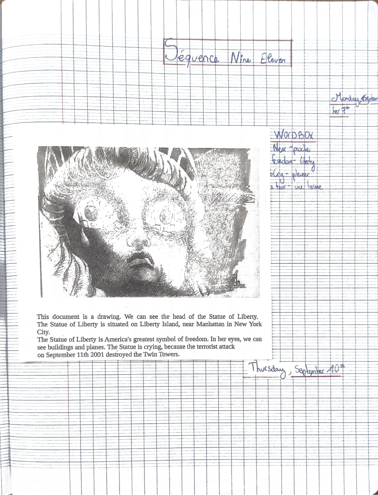
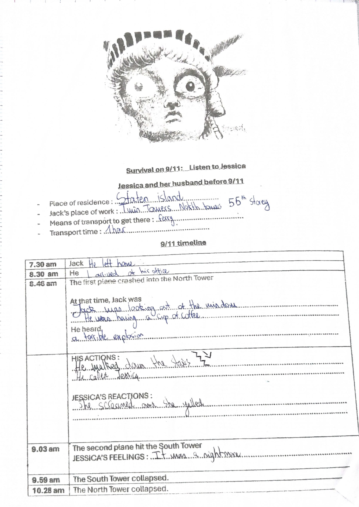
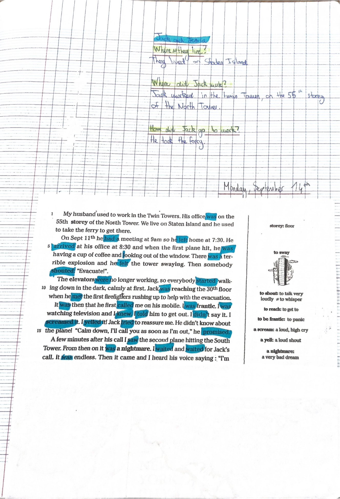
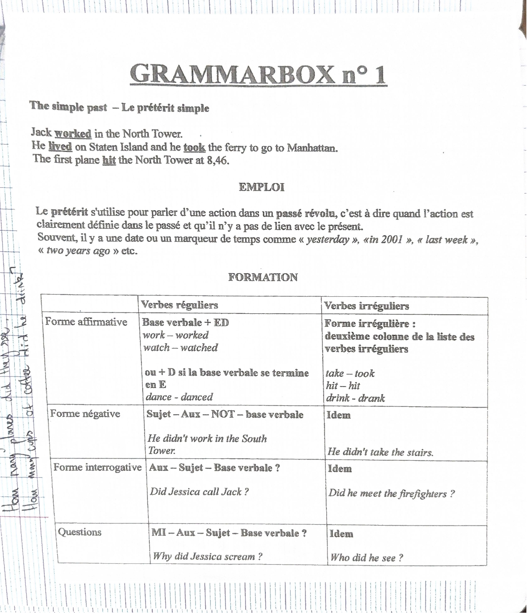

Première séquence de l’année : le 11 septembre 2001, à travers le dessin de la statue de la Liberté
et le témoignage de Jessica, « Survival on 9/11 ». Grammaire : le prétérit simple (Grammarbox n° 1).
La lecture complète reprend le cahier. La synthèse garde l’essentiel. L’extra va plus loin.
Les séances, dans l’ordre du cahier
Début de la séquence. Dessin de la statue de la Liberté qui pleure, wordbox.
Écoute « Survival on 9/11: Listen to Jessica » : fiche à compléter.
Questions sur Jack et Jessica, puis le texte du témoignage.
Résumé « Survival on nine eleven » écrit par Ruben.
Questions au prétérit, mots interrogatifs, Grammarbox n° 1, exercices.
L’histoire de Jack et Jessica, en heures
Jessica et son mari Jack vivent à Staten Island. Jack travaille au 55e étage de la tour Nord des Twin Towers et prend le ferry pour y aller.
Jack left home.
He arrived at his office.
The first plane crashed into the North Tower. Jack was having a cup of coffee and looking out of the window. He heard a terrible explosion. He walked down the stairs and called Jessica.
Heure de la réunion de Jack (he had a meeting at 9 am).
The second plane hit the South Tower. Jessica : « It was a nightmare. »
The South Tower collapsed.
The North Tower collapsed.
À retenir : le prétérit simple
Emploi : une action dans un passé révolu, clairement daté, sans lien avec le présent. Souvent avec un marqueur de temps : yesterday, in 2001, last week, two years ago.
Affirmatif : verbe régulier = base verbale + ED (work → worked), ou + D si la base finit par E (dance → danced). Verbe irrégulier = 2e colonne de la liste (take → took, hit → hit, drink → drank).
Négatif : sujet + didn’t + base verbale. He didn’t work in the South Tower.
Question : (mot interrogatif) + did + sujet + base verbale ? Did Jessica call Jack? Why did Jessica scream?
Après did ou didn’t, le verbe reste à la base verbale : jamais de -ed.
Mots à savoir
freedom
la liberté
to cry / a tear
pleurer / une larme
storey / floor
l’étage
elevator (US) / lift (GB)
l’ascenseur
firefighter
le pompier
to sway
osciller
to shout / to scream / to yell
crier / hurler
to collapse
s’effondrer
to be frantic
être dans tous ses états, paniquer
a nightmare
un cauchemar
Début d’année
La lettre de rentrée de Mrs Puslecki
Trois heures d’anglais par semaine : deux heures en classe entière, une heure d’AP (accompagnement personnalisé, en demi-groupe).
En AP, environ 15 heures dans l’année avec Labopractice, un laboratoire de langues, en salle informatique.
Le cahier est nécessaire à chaque cours. Le porte-vues reste à la maison pour ranger les évaluations. Les cahiers sont vérifiés et notés régulièrement.
Des devoirs pour chaque heure de classe entière, souvent aussi pour l’AP : vocabulaire, verbes irréguliers, leçons, préparation de prises de parole en continu, tâches finales. Ils sont sur Pronote, mais il faut aussi les noter dans l’agenda.
Un devoir commun d’anglais a lieu au deuxième semestre.
Conseil : rester « en contact » avec l’anglais. Séries et films en version originale, livres et magazines niveau A2/B1 (au CDI ou en classe), chansons.
La couverture du cahier montre cinq images : la statue de la Liberté qui pleure, une petite fille escortée par des policiers, une scène du film The Devil Wears Prada, le titre « I love series » et un couple d’un film romantique. Seule la première a déjà une leçon. La couverture et la lettre portent le nom et les signatures, elles ne sont pas affichées ici.
Monday, September 7th
Le dessin : la statue de la Liberté qui pleure

Document collé dans le cahier, avec sa description et la wordbox.
Description du document :
This document is a drawing. We can see the head of the Statue of Liberty. The Statue of Liberty is situated on Liberty Island, near Manhattan in New York City. The Statue of Liberty is America’s greatest symbol of freedom. In her eyes, we can see buildings and planes. The Statue is crying, because the terrorist attack on September 11th 2001 destroyed the Twin Towers.
Wordbox : near : proche ; freedom : liberté ; to cry : pleurer ; a tear : une larme.
Thursday, September 10th · écoute
Survival on 9/11 : listen to Jessica

Fiche d’écoute complétée à la main.
Jessica and her husband before 9/11
Place of residence : Staten Island.
Jack’s place of work : Twin Towers, North Tower, 55th storey.
Means of transport to get there : ferry.
Transport time : 1 hour.
9/11 timeline, avec les réponses de Ruben :
7.30 am : Jack left home. 8.30 am : he arrived at his office.
8.46 am, the first plane crashed into the North Tower. At that time, Jack was looking out of the window, he was having a cup of coffee. He heard a terrible explosion.
His actions : he walked down the stairs, he called Jessica.
Jessica’s reactions : she screamed and she yelled.
9.03 am, the second plane hit the South Tower. Jessica’s feelings : it was a nightmare.
9.59 am, the South Tower collapsed. 10.28 am, the North Tower collapsed.
Lecture incertaine : « 1 hour » pour le temps de trajet, écrit très vite sur la fiche.
Monday, September 14th · texte
Le témoignage de Jessica
Questions du cahier, réponses de Ruben :
Where did they live? They lived on Staten Island.
Where did Jack work? Jack worked in the Twin Towers, on the 55th storey of the North Tower.
How did Jack go to work? He took the ferry.

Ruben surligne en bleu tous les verbes conjugués au passé : was, had, left, arrived, felt, shouted, started, met, called, knew, told, screamed, yelled, tried, promised, saw, waited…
Glossaire du texte :
storey : floor (l’étage).
to sway : osciller (dessin d’une tour qui penche).
to shout : to talk very loudly ≠ to whisper (chuchoter).
to reach : to get to (atteindre).
to be frantic : to panic.
a scream : a loud, high cry. A yell : a loud shout.
a nightmare : a very bad dream.
Fiche · Text Survival on 9/11
Exercices sur le texte
A. Listen and fill in the blanks : exercice non rempli dans le cahier.
B. Find the translation in the text (réponses de Ruben, orthographe corrigée) :
l’époux
the husband
le bureau
the office
l’étage
the storey / the floor
l’ascenseur
the elevator (USA) / the lift (GB)
la réunion
the meeting
la fenêtre
the window
osciller
to sway
crier
to shout
dans le noir
in the dark
atteindre
to reach
le pompier
the firefighter
téléphoner
to call
le téléphone portable
the mobile (phone)
hurler
to scream / to yell
essayer
to try
le cauchemar
the nightmare
sans fin
endless
s’effondrer
to collapse
être dans tous ses états
to be frantic
se disputer
to argue
Retouches : Ruben a écrit « the phone mobile » (on dit the mobile phone, ou the mobile) et « to collapsed » (après to, base verbale : to collapse). Pour l’étage, la fiche demande un mot USA et un mot GB ; Ruben met storey côté USA et floor côté GB. En réalité, storey est l’orthographe britannique (story en américain) et floor s’emploie des deux côtés. À vérifier avec la correction en classe.
Thursday, September 17th · résumé de Ruben
Survival on nine eleven
Jack and Jessica lived on Staten Island. Jack worked in the Twin Towers, in the North Tower, on the 55th storey. He took the ferry to go to work. He left home at 7.30. He arrived at his office at 8.30. He was having a cup of coffee and looking out of the window, when he heard a terrible explosion. He walked down the stairs and he called Jessica. He saw firefighters. The first plane hit the North Tower at 8.46 am. The second plane hit the South Tower at 9.03 am. The towers collapsed.
Monday, September 28th · questions
Poser des questions au prétérit
Where did they live?
Where did Jack work?
How did he go to work?
When did Jack arrive at his office?
What did he do when he heard a terrible explosion?
When did he leave home?
Who did he see when he walked down the stairs?
What did Jessica do?
How many planes did they see? How many cups of coffee did he drink? (écrites dans la marge de la Grammarbox)
Schéma noté sous la dernière question : mot interrogatif → auxiliaire (did) → sujet → base verbale.
Retouche : Ruben a écrit « When did Jack arrived at his office? ». Après did, le verbe reste à la base verbale : When did Jack arrive…?
Grammarbox n° 1
The simple past – le prétérit simple

Fiche de grammaire collée dans le cahier.
Jack worked in the North Tower. He lived on Staten Island and he took the ferry to go to Manhattan. The first plane hit the North Tower at 8.46.
Emploi : le prétérit s’utilise pour parler d’une action dans un passé révolu, c’est-à-dire quand l’action est clairement définie dans le passé et qu’il n’y a pas de lien avec le présent. Souvent, il y a une date ou un marqueur de temps comme yesterday, in 2001, last week, two years ago.
Formation :
Forme affirmative. Verbes réguliers : base verbale + ED (work – worked, watch – watched), ou + D si la base verbale se termine en E (dance – danced). Verbes irréguliers : forme irrégulière, deuxième colonne de la liste des verbes irréguliers (take – took, hit – hit, drink – drank).
Forme négative. Sujet – Aux – NOT – base verbale, pour tous les verbes. He didn’t work in the South Tower. He didn’t take the stairs.
Forme interrogative. Aux – Sujet – Base verbale ? Did Jessica call Jack? Did he meet the firefighters?
Questions. MI (mot interrogatif) – Aux – Sujet – Base verbale ? Why did Jessica scream? Who did he see?
Fiche · Séquence 9/11
Exercices de prétérit
A. True or false? Justify each answer.
The first plane hit during the meeting. False : the first plane hit at 8.46 and the meeting was at 9.00.
Jack felt the tower moving terribly. True. Justification non écrite. Dans le texte : « he felt the tower swaying ».
Jack called Jessica when he was in his office. False : Jack called Jessica when he walked down the stairs. Ruben a écrit « when he was walked » : il faut when he walked ou when he was walking.
Jack took the elevators to evacuate. False : Jack took the stairs.
Jack left his office because he knew about the plane. False : Ruben écrit « because he heard a plane ». Retouche douteuse : le texte dit qu’il a entendu une explosion, senti la tour osciller, et que quelqu’un a crié « Evacuate! ». « He didn’t know about the plane. »
B. Conjugue au prétérit simple (réponses de Ruben, puis correction) :
They (WAIT) : they waited ✓ ; they didn’t wait ✓ ; Ruben « Waited they? » → Did they wait? ; Ruben « Yes, they waited » → Yes, they did. ; « No, they didn’t wait » → No, they didn’t.
He (HAVE) : he had ✓ ; he didn’t have ✓ ; Ruben « Had he? » → Did he have? ; réponse brève affirmative peu lisible → Yes, he did. ; Ruben « No, he not had » → No, he didn’t.
Retouche : la forme interrogative et les réponses brèves se font avec l’auxiliaire did, comme dans la Grammarbox. Ruben a inversé sujet et verbe, comme en français.
C. Mets les verbes au prétérit simple :
On September 11th, Jack didn’t leave home very early. He had breakfast and he began a book. He took the ferry and he didn’t arrive late at work.
Retouches : Ruben a écrit « didn’t leave » puis « left » en surcharge (la bonne forme est didn’t leave) et « didn’t arrived » (il faut didn’t arrive). had, began et took sont justes.
D. Pose la question sur le(s) mot(s) souligné(s) : exercice non rempli dans le cahier.
Cette partie n’est pas dans le cahier de Ruben. Ce sont des connaissances ajoutées, dans le périmètre de la séquence, pour aller plus loin. Ce qui compte pour l’évaluation reste le cours de Mrs Puslecki.
Extra · culture
September 11th, 2001
Ce matin-là, 19 terroristes d’Al-Qaïda détournent quatre avions de ligne. Deux frappent les tours du World Trade Center à New York, un troisième le Pentagone près de Washington. Le quatrième s’écrase en Pennsylvanie, après la révolte des passagers.
Près de 3 000 personnes sont tuées, dont plus de 340 pompiers de New York.
À l’emplacement des tours, on trouve aujourd’hui le 9/11 Memorial (deux bassins à la place des tours) et le One World Trade Center, haut de 1 776 pieds, en référence à l’année de l’indépendance américaine.
Les Américains écrivent la date mois/jour : 9/11 se lit nine eleven. Les Britanniques écriraient 11/9.
La statue de la Liberté, Lady Liberty, a été offerte par la France aux États-Unis et inaugurée en 1886. Elle a été conçue par Bartholdi, avec une structure de Gustave Eiffel.
Extra · grammaire
Pièges du prétérit
Prononciation de -ed : /t/ après un son sourd (worked, watched), /d/ après un son sonore (lived, called), /ɪd/ après t ou d (waited, started).
Orthographe : consonne + y → -ied (try → tried, cry → cried) ; voyelle + y → -yed (play → played) ; une voyelle courte + une consonne finale accentuée → on double (stop → stopped).
Be n’utilise pas did : I was, you were ; He wasn’t at home ; Were they in the tower?
Prétérit en be + -ing, vu dans le texte : he was having a cup of coffee. Il décrit une action en cours dans le passé, souvent interrompue par une action au prétérit simple : He was looking out of the window when the plane hit.
Used to, vu dans le texte : My husband used to work in the Twin Towers = une habitude passée qui n’existe plus.
Extra · verbes irréguliers du texte
À connaître par cœur
be – was/were – been
être
have – had – had
avoir
leave – left – left
partir, quitter
feel – felt – felt
sentir, ressentir
meet – met – met
rencontrer
know – knew – known
savoir, connaître
tell – told – told
dire, raconter
see – saw – seen
voir
take – took – taken
prendre
hit – hit – hit
frapper
drink – drank – drunk
boire
begin – began – begun
commencer
Quiz
10 questions tirées au hasard parmi . Chaque tirage change les questions et l’ordre des réponses.